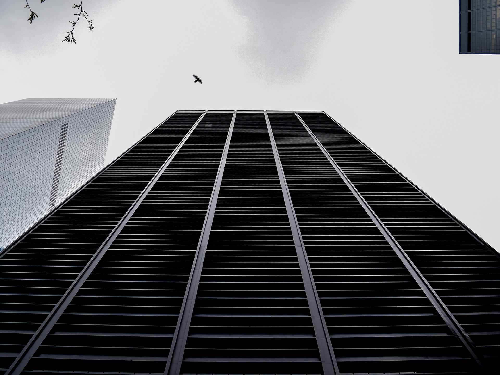

Perfil
Giuliano Cernada
Giuliano Cernada es un estudio unipersonal que se especializa en el diseño, la realización de documentación de carácter oficial y el modelado/renderizado 3D. Todos estos ítems se conjugan en una propuesta de diseño completa y en concordancia con la visión arquitectónica, dónde se busca comunicar con claridad cada decisión tomada y que detrás de cada una de ellas haya un justificativo funcional, estético y racional.
